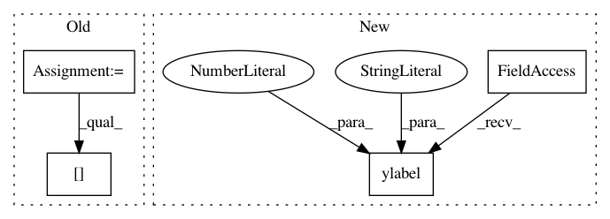

f2e2aa02df60786f53f080cf58bf11698b67fc6c,examples/text_labels_and_annotations/tex_demo.py,,,#,20
Before Change
from __future__ import unicode_literals
import numpy as np
import matplotlib
matplotlib.rcParams["text.usetex"] = True
matplotlib.rcParams["text.latex.unicode"] = True
import matplotlib.pyplot as plt
After Change
plt.plot(t, s)
plt.xlabel(r"\textbf{time (s)}")
plt.ylabel(r"\textit{voltage (mV)}", fontsize=16)
plt.title(r"\TeX\ is Number $\displaystyle\sum_{n=1}^\infty"
r"\frac{-e^{i\pi}}{2^n}$!", fontsize=16, color="r")
plt.grid(True)
plt.savefig("tex_demo")
In pattern: SUPERPATTERN
Frequency: 3
Non-data size: 4
Instances
Project Name: matplotlib/matplotlib
Commit Name: f2e2aa02df60786f53f080cf58bf11698b67fc6c
Time: 2017-05-30
Author: dstansby@gmail.com
File Name: examples/text_labels_and_annotations/tex_demo.py
Class Name:
Method Name:
Project Name: kymatio/kymatio
Commit Name: 4f1e7f2f936bf5f3e6d1da8d8be843dc3273fe67
Time: 2018-11-21
Author: janden@flatironinstitute.org
File Name: examples/1d/plot_filters.py
Class Name:
Method Name:
Project Name: tensorflow/models
Commit Name: a90db800a369032192560bd0fddde5b007340473
Time: 2018-05-07
Author: mironov@gmail.com
File Name: research/differential_privacy/pate/ICLR2018/rdp_flow.py
Class Name:
Method Name: plot_rdp_curve_per_example